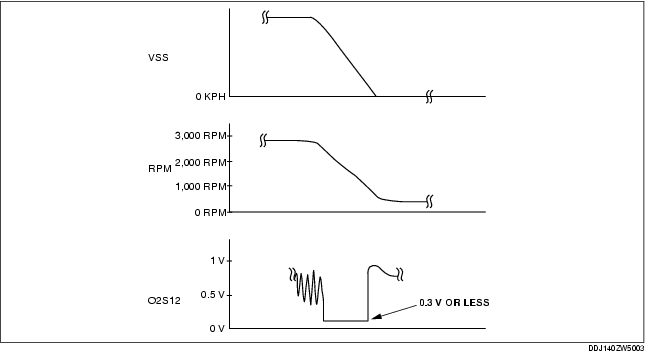
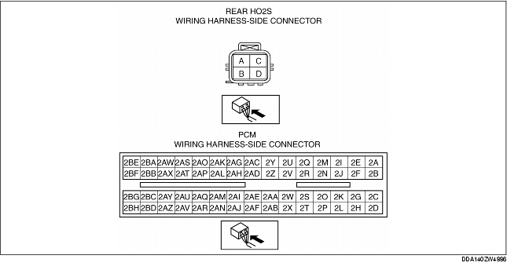

REAR HEATED OXYGEN SENSOR (HO2S) INSPECTION [ZY]
id0140008049c0
-
Note
-
• Before performing the following inspection, make sure to follow the procedure as indicated in the troubleshooting flowchart. (See Troubleshooting Procedure.)
Rear Heated Oxygen Sensor (HO2S) Voltage Inspection
1. Warm up the engine to normal operating temperature.
2. Using the WDS or equivalent, monitor the following:
-
- Vehicle speed (PID: VSS)
-
- Engine speed (PID: RPM)
-
- Rear HO2S voltage (PID: O2S12)
3. Drive the vehicle and decelerate the engine speed by releasing the accelerator pedal fully when the engine speed is 3,000 rpm or more.
4. Verify that the rear HO2S outputs a voltage of 0.6 V or more, one time or more, then verify that the rear HO2S voltage (PID: O2S12) is 0.3 V or less while decelerating as shown in the figure.

-
• If not within the specification, inspect the HO2S for an open or short circuit. (See Rear Heated Oxygen Sensor (HO2S) Circuit Open/Short Inspection.) Then if there is no malfunction in the wiring harness, replace the rear HO2S.
Rear Heated Oxygen Sensor (HO2S) Circuit Open/Short Inspection
1. Remove the PCM connector cover.
2. Disconnect rear HO2S connector.
3. Disconnect the PCM connector. (See INTAKE-AIR SYSTEM REMOVAL/INSTALLATION [ZY].)
4. Inspect the following wiring harness for open or short circuit (Continuity inspection).

Open circuit
-
• If there is no continuity, there is an open circuit. Repair or replace the wiring harness.
-
- Rear HO2S terminal A and PCM terminal 2AH
-
- Rear HO2S terminal B and PCM terminal 2J
Short circuit
-
• If there is continuity, there is a short circuit. Repair or replace the wiring harness.
-
- Rear HO2S terminal A and power supply
-
- Rear HO2S terminal A and body GND
-
- Rear HO2S terminal B and power supply
-
- Rear HO2S terminal B and body GND
Rear Heated Oxygen Sensor (HO2S) Heater Resistance Inspection
1. Disconnect the rear HO2S connector.
2. Measure the rear HO2S resistance between terminals C and D.
-
• If not within the specification, replace the rear HO2S. (See REAR HEATED OXYGEN SENSOR (HO2S) REMOVAL/INSTALLATION [ZY].)
-
• If the monitor item condition/specification (reference) is not within the specification, even though there is no malfunction, perform the "Circuit Open/Short Inspection".
Rear HO2S heater resistance
-
2-50 ohms
Rear Heated Oxygen Sensor (HO2S) Heater Circuit Open/Short Inspection
1. Remove the PCM connector cover.
2. Disconnect the PCM connector. (See INTAKE-AIR SYSTEM REMOVAL/INSTALLATION [ZY].)
3. Inspect the following wiring harness for open or short circuit (Continuity inspection).

Open circuit
-
• If there is no continuity, there is an open circuit. Repair or replace the wiring harness.
-
- Rear HO2S terminal C and PCM terminal 2I
-
- Rear HO2S terminal D and PCM terminal 2AB
Short circuit
-
• If there is continuity, there is a short circuit. Repair or replace the wiring harness.
-
- Rear HO2S terminal C and body GND
-
- Rear HO2S terminal D and power supply
-
- Rear HO2S terminal D and body GND